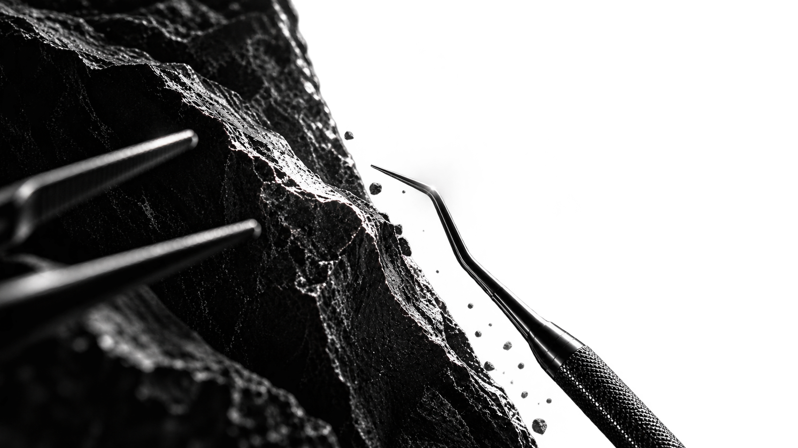
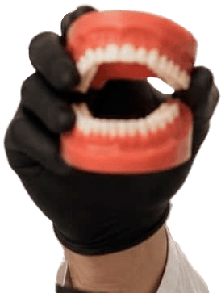
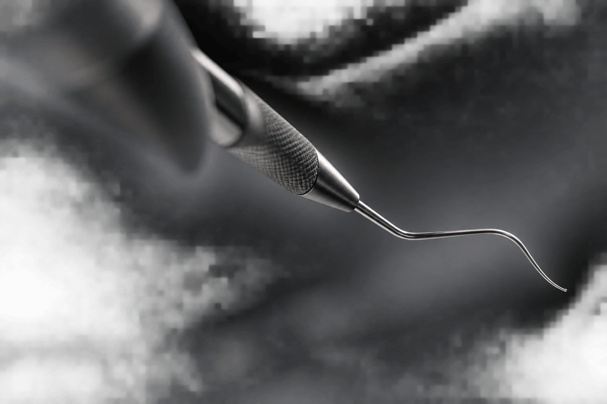
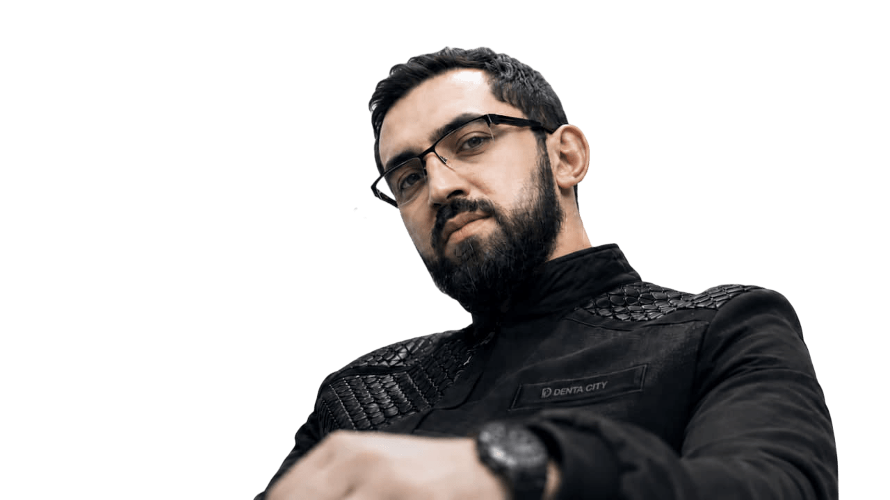
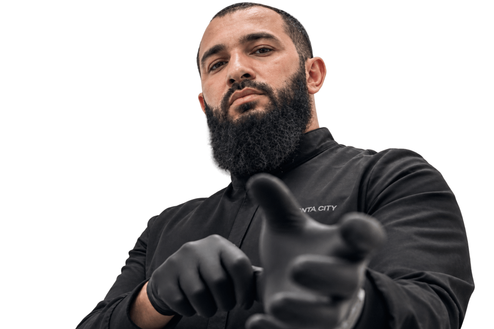
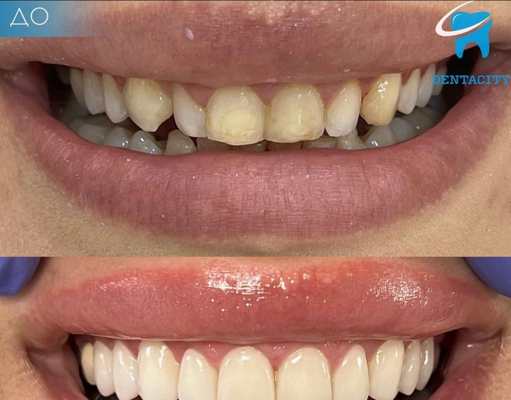
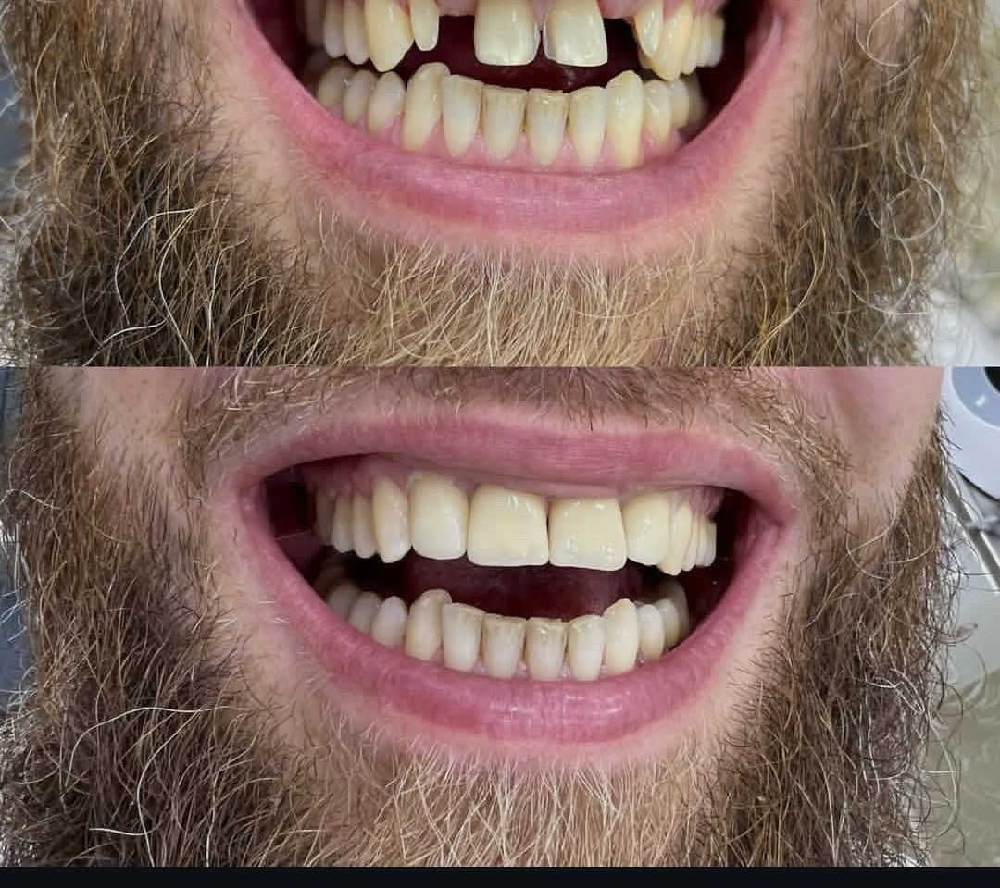
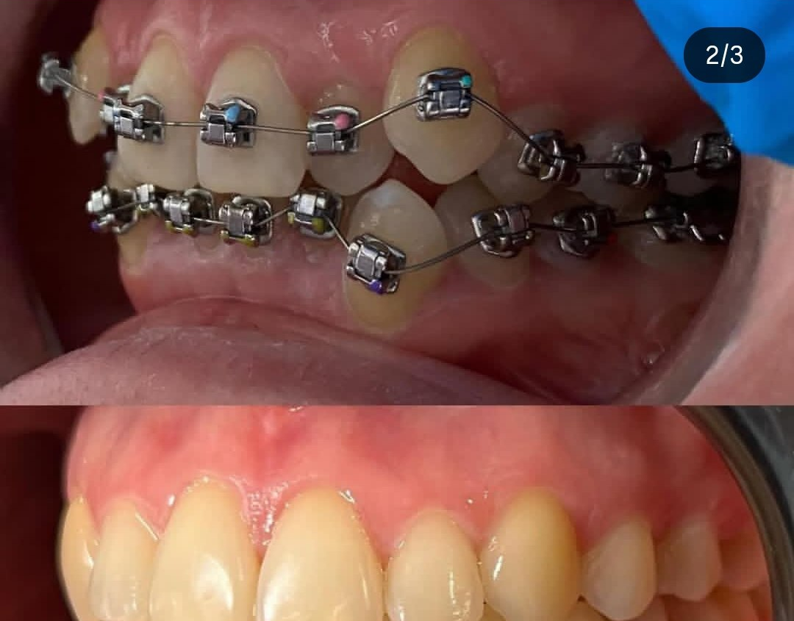
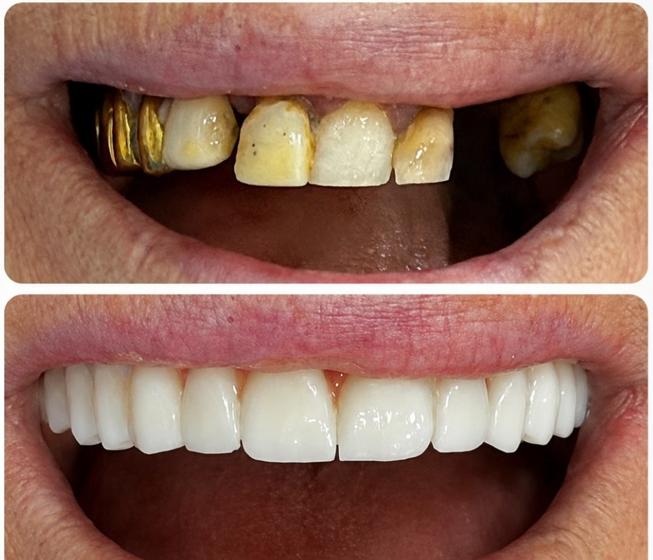
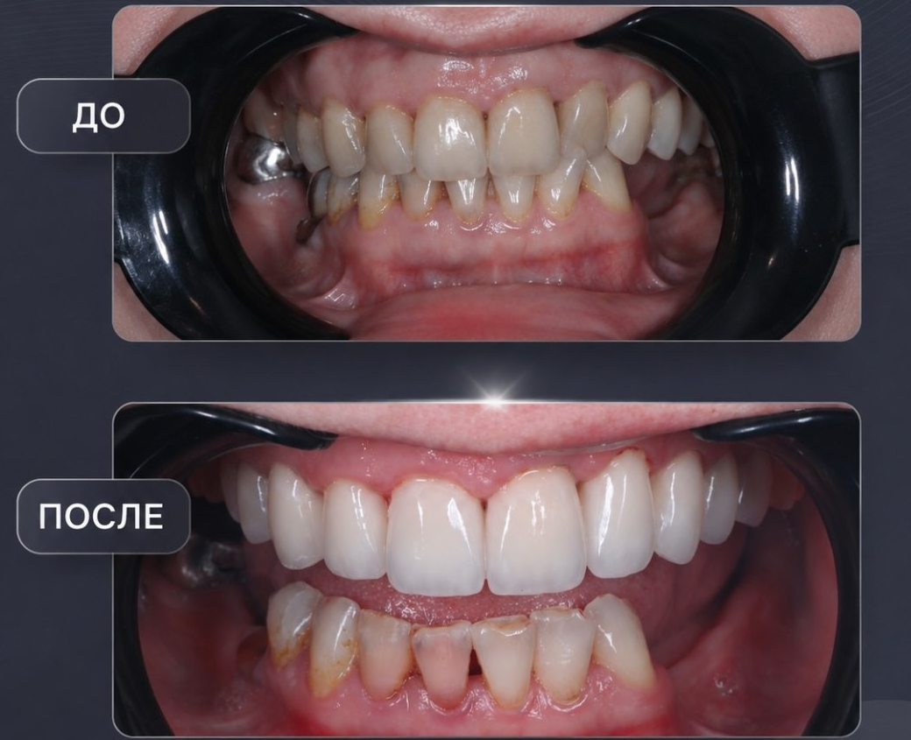

Как проходит лечение
Вы знаете план
до начала лечения
Листайте вниз — покажем четыре этапа лечения.
Листайте — каждый этап открывается отдельно.
Гималай Гезуев · хирург-имплантолог · 17+ лет практики
Я и моя команда лечим зубы, исправляем прикус, устанавливаем импланты и восстанавливаем улыбку целиком. Берёмся и за сложные случаи.
Записаться на бесплатную консультацию
Подход Гималая
Лечение в Denta City
Лечение зубов, ортодонтия, имплантация и протезирование — в моей клинике и по согласованному плану.
 01Консультация и план леченияОсмотрим, изучим снимки и объясним возможные варианты лечения.↗
01Консультация и план леченияОсмотрим, изучим снимки и объясним возможные варианты лечения.↗
 02Лечение и удаление зубовСохраняем зуб, когда это возможно. Если восстановить нельзя — планируем удаление и следующий этап.↗
02Лечение и удаление зубовСохраняем зуб, когда это возможно. Если восстановить нельзя — планируем удаление и следующий этап.↗
 03Чистка и отбеливаниеУбираем налёт и подбираем подходящий способ осветления зубов.↗
03Чистка и отбеливаниеУбираем налёт и подбираем подходящий способ осветления зубов.↗
 04Ортодонтическое лечениеИсправляем положение зубов и прикус с помощью брекетов и других методов.↗
04Ортодонтическое лечениеИсправляем положение зубов и прикус с помощью брекетов и других методов.↗
 05Имплантация и костное наращиваниеВосстанавливаем отсутствующие зубы и при необходимости подготавливаем костную опору.↗
05Имплантация и костное наращиваниеВосстанавливаем отсутствующие зубы и при необходимости подготавливаем костную опору.↗
 06ПротезированиеКоронки, виниры и комплексное восстановление зубного ряда.↗
06ПротезированиеКоронки, виниры и комплексное восстановление зубного ряда.↗
Не нашли нужную услугу? Выберите «Другое» при записи — администратор уточнит ваш вопрос.

Как проходит лечение
Листайте вниз — покажем четыре этапа лечения.
Листайте — каждый этап открывается отдельно.
Диагностика
 01 / 04Сначала понимаем проблему. Затем предлагаем лечение.
01 / 04Сначала понимаем проблему. Затем предлагаем лечение.План лечения

02 / 04Вы понимаете, что и зачем будем делать.Моя команда
 03 / 04Я лечу сам и подключаю мою команду там, где это нужно.
03 / 04Я лечу сам и подключаю мою команду там, где это нужно.После лечения
04 / 04Контроль помогает вовремя заметить изменения.Моя команда
Лечим зубы, исправляем прикус, устанавливаем импланты и восстанавливаем зубной ряд. Сложные случаи разбираем вместе.
05 профилей · выберите врача

Реальные работы Denta City
 ДоПосле
ДоПосле01 · История пациента

ДоПосле02 · Эстетическая ортопедия

ДоПосле03 · Эстетическое восстановление

ДоПосле04 · Ортодонтия

ДоПосле05 · Комплексная ортопедия

ДоПосле06 · Комплексное восстановление
Что будет после консультации
Врач проведёт осмотр, изучит снимки и объяснит варианты. Точная стоимость зависит от состояния зубов и выбранного плана.
Разбираем жалобы, смотрим зубы и изучаем снимки.
Объясняем, что можно сделать и чем варианты отличаются.
После консультации называем этапы и стоимость выбранного лечения.
Исламская рассрочка HALAL TIME
Для оформления нужны постоянная прописка в Чеченской Республике и поручитель старше 25 лет из числа родственников.
Бесплатная консультация
Оставьте заявку. Администратор уточнит, что вас беспокоит, и запишет к подходящему врачу моей команды.
Если удобнее, напишите в WhatsApp или позвоните в клинику.